Simple and Easy Recipes
Posts on 'indian'

Veg Recipe
Jul 25, 2019
Kodom or Kadamba is basically the name of a flower which has a round shape and very bright yellow color. The sweet Kheer Kodom (also known as Ras Kadam) has three layers. First one is grated mawa, second one is lightly sweetened mawa and the final one is juicy roshogolla. Yes its a three layered dessert and it tastes delicious! You can make this recipe with store bought rasgulla also but I made th ...


Nonveg Recipe
Jul 17, 2019
As you know Dhaba means road side food joints. Their ambiance and kitchen are not very sophisticated rather more simple and rustic. Dhaba style Butter chicken has spicy, rich, colorful gravy with generous amount of butter and their chicken pieces has very smokey flavor. Overall I love this version of Butter Chicken with some Garlic naan or Jeera rice. Do give this recipe a try and let me know how ...

Veg Recipe
May 7, 2019
Mango Rasgullas are summer delight to us. The recipe is very simple and easy. You just have to incorporate mango flavor in the rasgullas and sugar syrup. The taste of these Mango Rasgullas are out of the world. Serve then warm or chilled. Do give it a try and let me know how it turned out for you.

Nonveg Recipe
Feb 26, 2019
Dalna means a curry which contains potato with other vegetables or protein. But potato is a must for Dalna. Some also call it Torkari. Summer is coming and so is sweaty tiredness with it. If you don't want to spend long time in the kitchen, no worries! I have a solution. Dimer Dalna or Egg and Potato Curry is the most simple and easy recipe which can easily feed a crowd. Anyone can enjoy a good, t ...

Veg Recipe
Feb 10, 2019
Niramish means without onion and garlic. Usually when we offer a meal to god / goddess with our respect and devotion, we call it 'Bhog' / 'prasad' . In any prasad, this Aloor Dom is a must with khichdi and chutney. This recipe is without onion and garlic, that's why I mentioned 'niramish'. During monsoon you can also enjoy this with khichuri, beguni and chutney or in weekend breakfast make some lu ...

Nonveg Recipe
Jan 31, 2019
Mughlai Keema Paratha is a very famous street food which has another name Keema Baida Roti. In Kolkata we call them 'moglai porota'. I made these parathas exactly like street style with minced meat, but you can skip that Keema part and keep the rest of the recipe same. The process is a bit lengthy but it is worth trying. I made dry potato curry along with mughlai paratha because these two goes ver ...

Veg Recipe
Dec 17, 2018
This palak paneer recipe is the best for weeknight dinner. Usually while making palak paneer, we need several kind of paste like onion paste, tomato puree, spinach paste, ginger garlic paste ... time consuming ! In this recipe everything will be stir fried in little amount of oil then we will make just one paste out of them. Creamy, tasty and buttery palak paneer will be ready in a jiffy ! Do give ...

Nonveg Recipe
Mar 7, 2019
A super spicy and fiery indo-chinese starter is 'Chicken 65'. In southern part of India, few restaurants first started selling this Chicken 65 as a quick snack and now, people from all around the world knows about Chicken 65. In USA, we get delicious Chicken 65 from Indian restaurants, it is one of our favorite appetizer and that is why I made my mind to make this dish in my kitchen. You can make ...

Veg Recipe
Nov 12, 2018
Doi Fuchka or Dahi Puri Chaat is one delicious and popular variety from Chaat Gharana. You can get several types of chaat in India from street vendors. They all are very very tasty. In Kolkata, one of the famous chaat is 'doi fuchka'. The hollow chips are filled with spicy potato filling, thick sweet and sour yogurt mixture, sweet tamarind chutney along with lots of fresh coriander leaves and few ...

Nonveg Recipe
Oct 29, 2018
Pudina Chicken has a delicious yogurt and mint based gravy which goes best with plain roti or Indian flatbread. Mint leaves / Pudina patta has it's very own unique taste and flavor, which is why you can only use them in those dishes where it fits properly. Not every chicken curry tastes good with mint but this one is my family favorite. Pudina Chicken is very simple recipe with loads of fresh flav ...

Veg Recipe
Sep 25, 2018
Paneer Kathi Roll is loved by both vegetarian and non vegetarian people all across India. Paneer Frankie or roll is nothing but stuffed wrap, cooked paneer cubes with some onion slices and green chutney will be stuffed inside a cooked flour paratha. It will be easy for you if you divide the recipe in 3 parts - making stuffing, making paratha, assembling the rolls. You can serve this as evening sna ...

Nonveg Recipe
Sep 21, 2018
Kolkata style Chicken Dum Biriyani is one of the tastiest variety of biriyani recipe, which has awesome flavors and juicy chicken pieces. You can have it as it is or with Chicken Chaap / Korma / Kosha. I also have other Biriyani recipes in my blog. Cooking Biriyani is time consuming, also the more you practice the more you will get better at this. The process is lengthy but with few tricks and tip ...

Veg Recipe
Sep 4, 2018
Upma is a very healthy and tasty Indian breakfast, in which the main ingredient is semolina. It is very popular in southern part of Indian. But nowadays Upma is served in many other households also. Almost twice in a week my mom used to give me 'jhal sooji'(Bengali term) in my lunchbox. It's not just me, my friends also enjoyed it. The fresh flavors of curry leaves and green chilies, proteins from ...

Nonveg Recipe
Dec 4, 2018
'Torka-ruti' has always been a great favorite of mine. It's great with any type of bread like naan, tandoori roti, lachha paratha ... but with plain chapati / roti, the pair becomes heavenly. I have already posted some recipes on 'dhaba style' but the most popular and well known recipe is 'dim torka' or 'whole moong daal with scrambled egg'. When they serve this dish with raw onion chunks, green c ...

Nonveg Recipe
Aug 25, 2016
We all love to eat food from Dhaba (road side food joint) while traveling. Nowadays you can find many fake dhabas and taste of their food is also fake, nowhere close to the authentic ones. Luckily few old and original dhabas in India still sells the best meals. After tasting those foods, you will probably think that their cooks must have some kind of magical hands. I once tasted their 'mutton curr ...

Nonveg Recipe
Jun 29, 2016
Our common friend Subhodip visited our house last weekend for a dinner. He is a real foodie and have a very good knowledge about food and restaurants. So, I wanted to make something new on chicken for him and also for my blog. I have already posted 'mutton dopyaza' recipe, then I thought this time why not with chicken? Confirmed the idea with my hubby and 'chicken dopyaza' got selected for main-co ...
")
Nonveg Recipe
Jul 12, 2018
One of the famous street food from Kolkata is 'egg roll'. A flaky paratha, a layer of egg and lots of veggies with sauces will never fail to satisfy your appetite. There are so many varities of roll like 'egg-chicken roll', 'mutton roll', 'paneer roll', 'egg-mutton roll' etc. They all are very yummy and easy to make. Try this in your kitchen and let me know about your story.

Veg Recipe
Aug 20, 2018
I fell in love with 'daal fry' when I first tasted it at a restaurant. A big bowl of daal fry with fresh aroma of coriander leaves and few slices of naan .. very simple equation to make me happy. Yes, you read it right .. no need of non veg stuff with this kind of blissful meal. In India, I never had daal fry at home, always in restaurant. But time flies so quickly. Now I can make it by myself. I ...
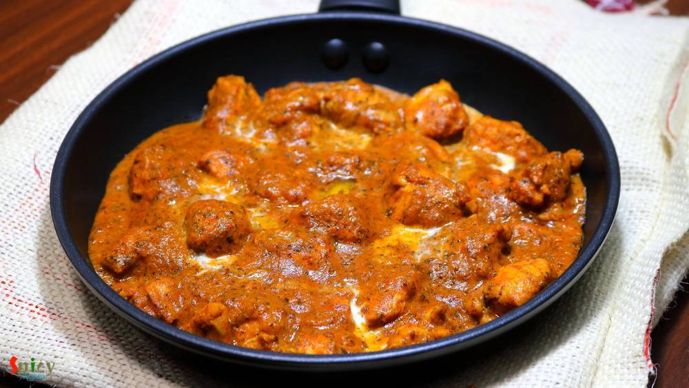
Nonveg Recipe
May 18, 2018
I have someone in my house who often demands to eat 'homemade-restaurant style' dinner in weekend ???. That's why last Sunday I had to make 'butter chicken' along with 'butter naan'. Nowadays 'butter chicken' is famous in all over the world. In Indian restaurants this is the mostly ordered dish. It has a tomato based, rich, velvety gravy and grilled, juicy chicken pieces. The combination was a tot ...

Nonveg Recipe
Apr 12, 2016
I always find immense pleasure in cooking deep fried dishes, I know they are not always healthy to eat, but then, who is watching ? I made this 'fish pokora' last month and simply forgot to post. It is close to 'amritsari fish fry' but I didn't use lots of spices, that's why they are just 'fish pakora'. You can enjoy this with chilli sauce / chutney / coke / beer. Everytime they will taste scrumpt ...

Nonveg Recipe
Jul 2, 2019
We always have a grand feeling whenever we hear the name 'Biriyani'. One of the most popular Indian dish accross the world is now Biriyani. Kolkata style Mutton Biriyani has a very unique aroma, juicy mutton pieces, long grain fragrant Basmati rice, soft potatoes and a piece of egg - everything in one plate. Whenever you are visiting Kolkata, do taste the Roshogolla, Mishti doi and Mutton Biriyani ...

Veg Recipe
Aug 31, 2016
Durga puja is just a few days away. Every street of Bengal and other parts of India will be filled with people and food stalls. Among all of them 'chaat' stalls are my favourite. I like various type of chaats like panipuri, dahi puri chat, papri chat, samosa chat, nimki chat, batata puri chat, ghugni chat and so on. Though today I am not sharing any Bengali chaat, but 'pav bhaji' is quite famous i ...

Veg Recipe
Aug 22, 2016
How many of you like the smell of 'capsicum' / green bell pepper in vegetarian dishes ?? I am. Whenever I cook, specially without onion and garlic dishes, most of the time I end up adding capsicum into it ... i know it sounds stupid but surprisingly the taste becomes more yumm ! Today's recipe is about 'paneer rezala', a vegetarian mughlai delicacy, where paneer cubes are cooked in a nut based whi ...

Nonveg Recipe
Aug 12, 2016
He bought a large packet of Tilapia fillets last week. He is a crazy fan of fish and can eat it everyday, whereas, I don't like to eat 'macher jhol' / 'mach vaja' each and every day like him. I get bored very quickly. So, this week I made these 'tandoori fish tikkas' along with some rice and simple daal. They came out delicious and also uplifted the taste of our boring lunch. I followed a very eas ...

Nonveg Recipe
Aug 8, 2016
We both adore almost any type of mutton curry. I think, once in a week, mutton curry is must for every Bengali households. I made this curry with some plain roti / chapati in dinner last month, just didn't get time to post. Now finally I am sharing this yummy recipe with you all. If you love the strong flavour of black pepper, then believe me, 'morich mangsho' is worth giving a try. I am sure your ...

Veg Recipe
Jul 21, 2016
How many of you guys clean your kitchen pantry often ? Well, I do it once / twice in a year .... very common for a super lazy person ! Last week I found half bag of whole moong daal in my pantry which was sitting behind a pack of pasta without whispering a word. Then I thought why not make a very simple daal like comfort food. Didn't get time to soak the lentils in water, that's why I used pressur ...
 / চিকেন কাটলেট")
Nonveg Recipe
Apr 20, 2016
'Chop - Cutlet' shops are very much available in Kolkata. You will surely find one or two shop in every street. You know how much I love fried stuff, but this one sits on top of my favourite list. 'Cutlet' means breadcrumb coated fried flat croquette. Generally in India we eat this type of fast food from street shop. After my marriage my mom twice made these chicken cutlets at home. They were scru ...

Nonveg Recipe
Jun 13, 2016
Earlier I have shared the recipe of 'Kolhapuri Egg curry', today I am going to share the same recipe, but with chicken and some changes. One of the main ingredient in Maharashtrian cuisine is 'coconut'. We both are not too much coconut eater but when it comes to make authentic dish, I always try to make the taste as close as possible. As this is a 'Kolhapuri' gravy, you have to incorporate coconut ...

Nonveg Recipe
Jul 12, 2016
In USA, every Indian resturant serves 'chicken tikka masala' and it tastes delicious. I never had it in India, don't know why ? Tikka sized grilled chicken, onion and bell peppers are cooked in a tomato based creamy gravy. After tasting this dish several times in restaurants, last month I thought of making it at home. Few months ago I uploaded the recipe of 'chicken tikka kabab', so I am going to ...

Veg Recipe
Jul 6, 2016
I find this particular recipe of pulao very relaxing and different. 'Achaar' / pickle itself is a very tasty ingredient. With rice and some veggies it creates a very beautiful dish which takes so little time to cook. If you are looking for easy but unique weeknight dinner, then 'Achaari Pulao' along with some raita and salads should be the one for you. This is a very flexible preparation, you can ...

Veg Recipe
Jun 23, 2016
After scorching heat of summer, first few days of monsoon are my favourite. In those days I don't like to stand in front of the gas for long time, because in the meantime you can enjoy the rain by sitting beside the window. I think you guys have already guessed that I am talking about one pot meal - they are so easy to cook. One of the famous one pot meal in Bengal is 'khichuri' / khichdi. I have ...

Veg Recipe
Jun 24, 2016
Panchmel Daal is a very healthy and traditional Rajasthani dish, which you can make with five types of lentil - yellow moong, urad, masoor, toor, whole moong / chana daal. This daal is also known as 'panchkuti daal'. This dish is fully packed with protien and nutrition, also it requires very less oil. You can enjoy this delicious, thick consistancy daal with plain roti, bati or rice. Not only the ...

Nonveg Recipe
Jun 22, 2016
'Keema Aloo' is my favourite curry when it comes to a fuss free but yummy dinner. It's so rich and spicy that there is no other meat curry which you can make in such a less time. I used mutton keema but feel free to use chicken mince. After adding the cubed potatoes, this dish becomes a killer ! Serve this with plain rice or paratha, every time 'keema aloo' will be a hit. It is also a very good ma ...

Veg Recipe
Jun 17, 2016
Most probably I am the only blogger who have taken so long to post about her own regional recipe of 'phuchka'. Because almost every blogger has their own regional recipe of 'panipuri / golgappa'. But it's better late than never. In Kolkata I never eat 'phuchka' with sweet chutney, always with tangy tamarind water ? and believe me there is no fun of having them sweet, the taste has to be spicy and ...

Veg Recipe
Jun 16, 2016
Onion parathas can be anyone's savior because they are very easy to make. I know that in many households people loves to eat 'paratha' in their breakfast. Only we know about the pain of making time-consuming breakfast. But these parathas are so simple and take very less time to cook. We both thoroughly enjoyed the spicy onion filling inside those soft parathas. You can make 5 parathas with these p ...
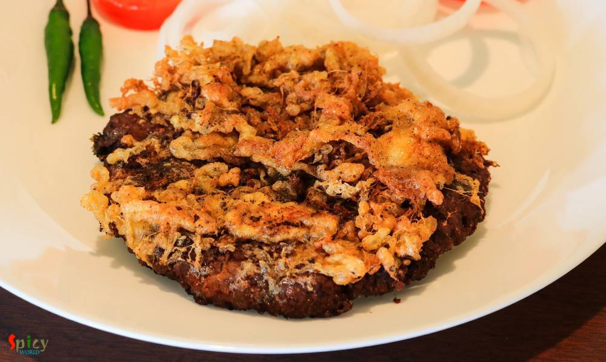
Nonveg Recipe
Jun 14, 2016
Who doesn't crave for yummy snacks in the evening with some cold drinks during summer ?? I guess everybody does. Summer or winter doesn't matter ... weekend evenings are meant for some awesome starters ! After few trials I finally created the exact taste of Kolkata's one of the famous street food - 'kobiraji cutlet'. Kobiraji means coverage or lace like texture, which you can create with beaten eg ...

Nonveg Recipe
May 16, 2016
This is a very popular dish from Mughlai cuisine in India. In this recipe medium size mutton pieces are cooked in a white, creamy, nut based rich gravy. 'Rezala' goes best with naan, biriyani, roti or paratha. I have already posted several recipe on 'rezala'. The dish has a very unique taste. It is neither very spicy nor very sweet. I made this last week and thoroughly enjoyed it with plain rice. ...

Veg Recipe
May 12, 2016
I was drawn towards this dish because of its easy method of cooking. In weekdays I never manage my time to make 'breakfast', but when I found out about this recipe where dosa batter doesn't need any farmentation ... I was interested ! You just have to rest the batter for 10 minutes, after that you can make your delicious breakfast in no time. One of the famous south indian breakfast is 'uttapam'. ...

Veg Recipe
May 11, 2016
'Pulao' plays a very significant role in Indian cuisine. Our cooking is mostly based upon 'curry' / gravy version which goes best with pulao. Their relationship is like - 'behind every tasty curry, there is a pulao' ... ???? You can never underestimate it because sometimes 'pulao' itself can be very rich and attractive like 'yakhni pulao', 'prawn pulao', 'sweet pulao' and so on. Today I am sharing ...

Nonveg Recipe
May 10, 2016
This chicken curry belongs to the category of 'dhaba food'. The gravy is very popular in Punjab and all over India. You can also make this dish with paneer or vegetables. The white, creamy texture of the gravy and beautiful aroma of fenugreek leaves will take you to heaven. I used boneless chicken for this recipe, feel free to make it with chicken on bone, it will be no issue. You can pair this di ...

Nonveg Recipe
Mar 26, 2016
The maincourse dishes from 'mughlai cuisine' has rich, oily, flavorful gravy and my husband is a fan of their cuisine. One of our common favorite item is 'Chicken Rezala', thick + white + rich gravy with juicy chicken pieces. I like my rezala with thick gravy but many people also like to eat thin rezala gravy. I have already shared 'fish rezala' recipe with you and now it's time for chicken. You c ...

Nonveg Recipe
May 3, 2016
Few months back I saw a recipe of this 'dhaniya murgh kabab' with boneless chicken in facebook. The picture caught my eyes and then I made my mind to give it a try. But I actually got time to make it last weekend as I already had so many recipes in my drafts and to-do list. There were few changes I make with the recipe and we both got very much impressed by it's result. Smokey flavour of any type ...
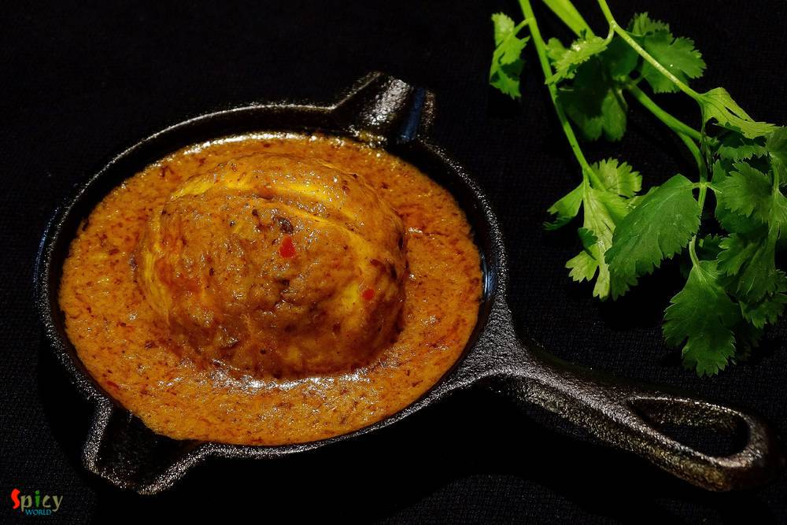
Nonveg Recipe
May 2, 2016
There are some recipes which are classics. They don't need any upgradation. 'Kolhapuri Egg Curry' is from this category. This is a famous Maharashtrian dish in which boiled eggs are cooked into the 'kolhapuri' gravy ... it tastes million bucks ! This curry is rich + hot in taste and goes perfectly with steamed rice or plain chapatis. You can keep a large batch of this Kolhapuri masala in fridge fo ...

Nonveg Recipe
Apr 26, 2016
Don't know about you, but I love 'keema' / mince form of meat. I have already posted so many recipes on 'keema' and this time I made paratha with mince chicken. The authentic recipe calls for 'mutton keema' but didn't have it that time, so made it with chicken and the parathas came out perfectly fine. These breads can be enjoyed with pickle, raita or any type of gravy. The recipe is very simple bu ...

Veg Recipe
Apr 25, 2016
I love to keep 'yogurt' in my fridge all through the year. Because it has so many roles in cooking. You can eat plain yogurt, make gravy / cake / dessert / drink and also it helps to marinate protien. I can never imagine a day without yogurt in my fridge. Summer is almost here and I have already started to make different types of drinks and smoothies. Among them, one of my favourite is 'chaas'. Th ...

Nonveg Recipe
Apr 22, 2016
Are you a garlic loving person ? I am. As chicken is my favourite protien, so I had to combine these two in one dish. 'Lehsuni Murgh' is the perfect dinner choice I made last of last weekend. The dish has very minimum spices with beautiful roasted garlic flavour. This curry can be served with naan, roti or paratha. Recipe is very simple but it tastes heavenly.

Nonveg Recipe
Apr 15, 2016
What can I say about this one? Because again its Kabab!! This malai kabab has very smooth texture and smokey flavour. 'Malai' means cream, usually chicken cubes are marinated with yogurt, cheese, cream and some spices, I also did the same. You will be lost whenever you put that juicy, tendor piece of chicken in your mouth. I am damn sure that these kababs will make your appetite satisfy. Enjoy the ...

Nonveg Recipe
Apr 11, 2016
Chicken curry is almost regular in my kitchen and that's why I always try to do some twists with the masala, otherwise who will eat same chicken curry regularly? Nobody ! This time I made the twist with dry spices. Generally whole garam masala is used in this type of curry but I decided to go for a change and surprisingly I got the perfect taste. 'Bhuna' means koshano / in low flame you have to co ...

Nonveg Recipe
Apr 5, 2016
I can eat chicken curry in any mood, any day. Chicken was almost regular to our home. My father and I are true chicken lover and that's why my mom used make very plain and simple chicken curry on weekdays. Sometime when she was in hurry, she used to throw everything in a pan and came up with this tasty chicken curry. I also heard that villagers often make this kind of curry which needs no recipe, ...

Nonveg Recipe
Feb 19, 2016
A good Indian maincourse dish is always paired well with various types of pulao or many types of bread. But sometimes pulao itself can become a very rich and heavy dish. Yes, I am talking about 'mutton pulao'. In this recipe, the rice will be cooked with the tasty mutton stock (yakhni). That is why this type of pulao become rich itself. We both are very much fond of 'yakhni pulao'. You just have t ...

Nonveg Recipe
Mar 31, 2016
In India "biriyani" is a very popular dish and we both are crazy about any type of 'biriyani'. You can find plenty of variations in biriyani. The process is a little bit of lengthy but the result is unbelievable. Last friday I took an attempt on making Keema Biriyani, after the entire process I realized it is the easiest one. That is why I am sharing this recipe with you because it is one of the t ...

Veg Recipe
Mar 30, 2016
I have not grown up too much of eating 'paneer' rather I grew up eating fish, chicken, rice, dal and vegetable dishes. I ate paneer in parties and very few times in restaurants. But after coming to US I learned how to make paneer at home and trust me, those self made soft white cubes gave me immense happiness. So, after that day we both have become paneer lover and have tried several dishes. This ...

Nonveg Recipe
Mar 28, 2016
Obviously they are not our regular 'aloor chop' / aloo tikki, they are something very special, aloo tikkis are stuffed with spicy minced meat, a little different from usual, but they tastes million bucks !! We Bengalis generally eat 'aloor chop' with puffed rice or tea whereas in other parts of India 'aloo tikki' is always served with chutneys. I will recommend you the second one for these stuffed ...

Veg Recipe
Mar 13, 2016
In India one of the famous bread is 'lachha paratha', soft and flaky with lots of layers. You can pair almost any veg or non veg gravy with this paratha, everytime they will taste awesome. For novice, this type of paratha may not be successful on first attempt. But believe me, after few try they will seem very easy. The main attraction here is the layers. The more layers you can make, the more fla ...

Veg Recipe
Mar 17, 2016
The best and most common weeknight's meal is dal and rice. Nobody likes to eat bland dal, everybody needs some zing to their comfort food sometimes. So, 'spicy urad dal' is my new favourite dal with some kick. You can also call this lentil soup 'tarke wali dal', now everyone has their own story of 'tempering'. I have used lots of garlic, fresh curry leaves, cumin and mustard seeds. But you can add ...
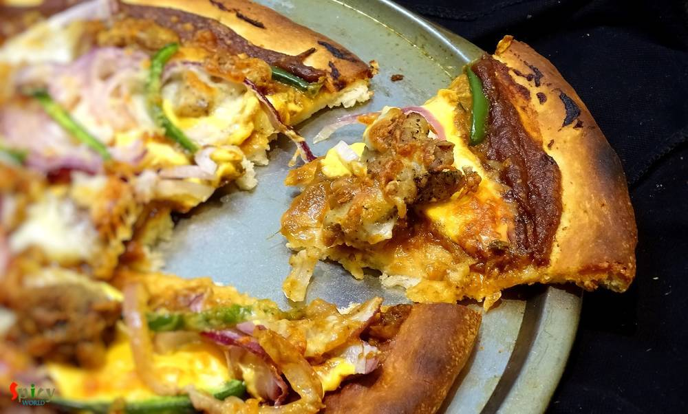
Nonveg Recipe
Mar 9, 2016
Ahhh, atlast I got the time to write down this particular. Made this Chicken Pizza two months ago with Makhni gravy, but the recipe is a bit long, so didn't get the time to write in one sitting. Finally I am posting the delicious pizza recipe. The main attraction here is the sauce which is makhni gravy. I know that we all are a big fan of 'murg makhni' or 'paneer makhni', then why not try this sau ...

Veg Recipe
Mar 7, 2016
I think without a cup of tea every day is incomplete. Don't you think so ?? Tea plays a very important role in our life. In the morning my father needs a cup of tea, a biscuit and a newspaper. I guess every household has the same story in India. To me every gossip and get to gather is incomplete without tea. Every country has their own taste of tea. Here is the recipe of our Indian special 'masala ...
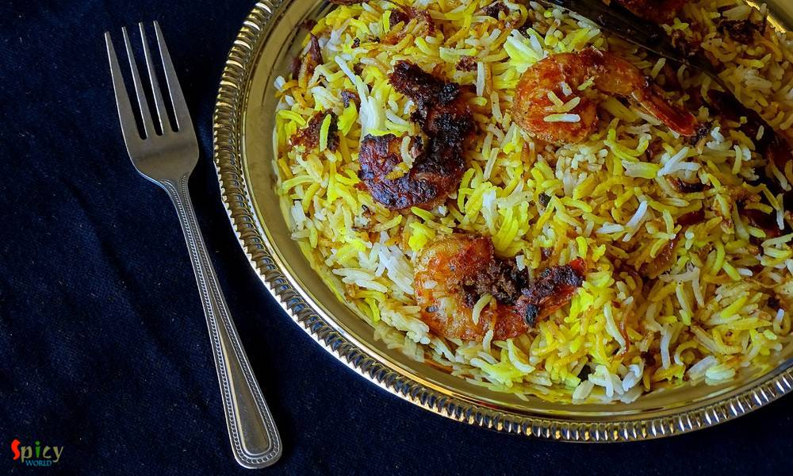
Nonveg Recipe
Feb 24, 2016
This is my first try on 'Prawn Biriyani' and I pretty much nailed it. I have made this biriyani in classic way, everything is cooked by 'dum' and also in sealed vessel. The taste and aroma was phenomenal. The flavour of fresh shrimps and long grain basmati rice gave this dish a unique taste, very much different from chicken / mutton biriyani. We both enjoyed it with chicken curry. You have to try ...

Veg Recipe
Feb 15, 2016
'Palak paneer' is a famous north indian dish. This is a hit item for spinach lovers. After adding heavy cream the texture will make you greedy. Palak paneer's smooth, rich and velvety gravy is beyond everything. It goes very well with butter naan. It's a no onion and no garlic recipe

Nonveg Recipe
Feb 11, 2016
My husband is a craaaazzyyyyy BiriYani lover. So, I thought what could be more exciting than a biriyani treat to him on V day!!! To cook something special, what he loves, will be the perfect way to express my feelings to him on this perfect day. I researched a lot upon new ideas of biriyani, then my eyes got stuck on Chef Sanjay Thumma's 'ulta biriyani'- how beautiful it is!! I won't say that this ...

Veg Recipe
Feb 8, 2016
I am a big fan of different types of 'pulao'. One of my favorite pulao is 'Jeera Rice' because of it's saltiness and spicyness. It goes very well with many types of veg and non veg curry. The recipe is very simple and easy. You can also give 'jeera rice' in any adult's lunch box with dry curry, every combo will become great. Try this in your kitchen and let me know how it turns out.

Veg Recipe
Feb 5, 2016
Sometimes, specially in weekdays, I just want to spend very little time in kitchen but also cook some tasty foods. 'Dahi Aloo' is one of the quickest and tastiest maincourse I found out. You have to cook the crumbled and boiled potatoes in a spicy, tangy yogurt sauce. It is that simple, can you imagine ? This is also a no onion and no garlic recipe, best for puja days or 'vrat' days. You can pair ...
 / Potato and Cauliflower curry / Aloo Fulkopir torkari")
Veg Recipe
Jan 25, 2016
We, nonvegetarian people, generally ordered nonveg dishes while eating at restaurants or dhabas. But we also love to eat home cooked vegetarian meals. In one of our trip to Digha before marriage, we made a stop at the famous 'Sher-e-punjab' for heavy breakfast. We ate there several times before but never did breakfast, so, that was our first time. As it was morning, we orderd veg like 'aloo parath ...

Veg Recipe
Jan 12, 2016
Whenever food has smoked or grilled flavour, there is no second thought about it. Because it has to be tasty. There are so many colorful vegetables available in grocery market during winter. I told you before that my love for winter is only because of food. We can make and also consume without any tension various types of food. Today I am talking about 'eggplant'. Though we both are not big fan of ...
")
Veg Recipe
Jan 11, 2016
In India samosa is a very popular appetizer. We call it "singara" in West Bengal. Almost every evening my grandpa brought samosas from roadside shop and they were delicious. Last week I made samosas at home (inspired by my mother and husband) and they came out really tasty. So, please try this recipe at your home and impress your family.

Nonveg Recipe
Jan 9, 2016
Last saturday 'he' brought a whole chicken from market. I got really panicked because I have never cooked whole chicken before. Immediately I googled for some ideas. First thought was 'murg mussallam' but then my eyes got stuck to a picture of whole roasted chicken and we both love chicken roast. So, the final decision was 'whole tandoori chicken'. The name itself describes it's scrumptiousness. E ...
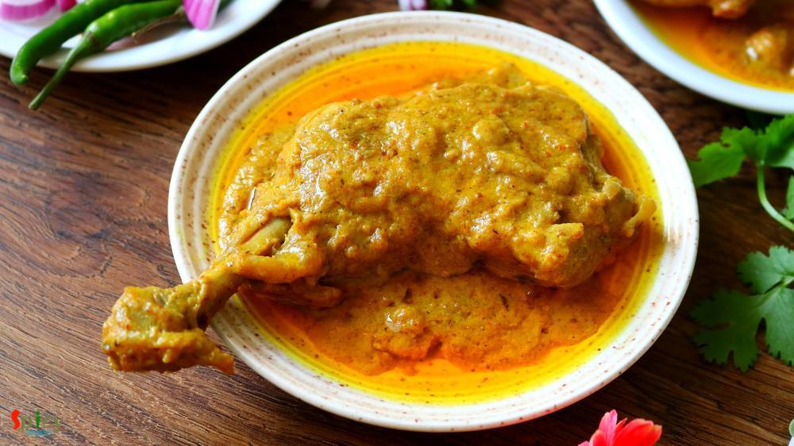
Nonveg Recipe
Jan 7, 2016
One of the most famous dish from Mughlai cuisine is 'Chicken Chaap' and the taste is unbeatable. You will find the actual taste and flavour in few restaurants in Kolkata. After researching for a long time on the authentic recipe of Chicken chaap, here is the way how I made it. This recipe will give you the exact flavour of restaurant style Chaap. This dish should not be eaten as regular meal. It h ...
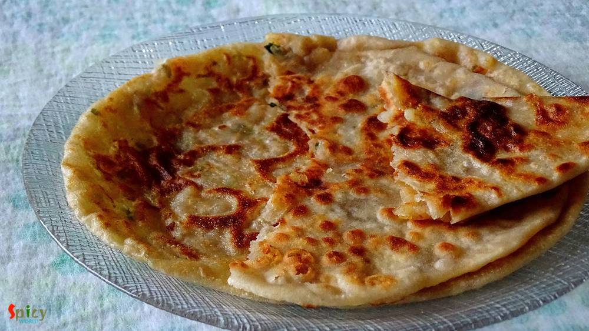
Veg Recipe
Jan 7, 2016
I have many stories about 'aloor porota' in my life. My mom used to give me pure bengali style 'aloor porota' in my lunch box during school life and my friends were always a fan of my lunch box. That was my first story of this porota. When I was in college, we (my family) loved to eat 'dhaba food' during travel. In India, each and every dhaba serve 'aloo ka paratha'. I tasted their paratha many ti ...
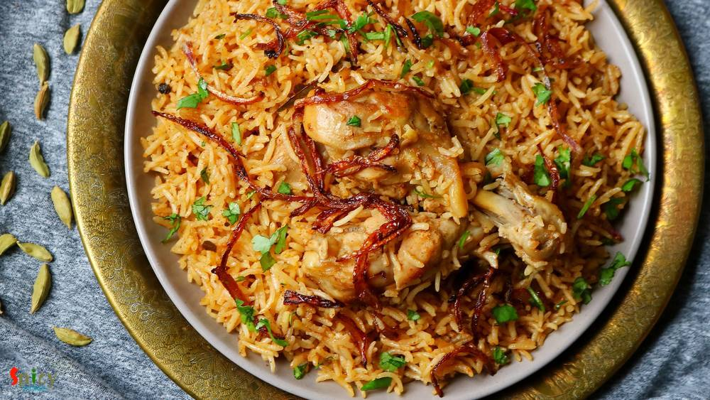
Nonveg Recipe
Jan 6, 2016
One of my favorite weekday's meal is 'chicken pulao', because it takes very less time to cook. The dish is super tasty but very easy. I basically don't need any sides with this pulao, it itself tastes delicious. I only love to add potatoes but if you like other veggies in your pulao, feel free to add. This is also a very good lunch box option for adults and I can guarantee you that the box will re ...
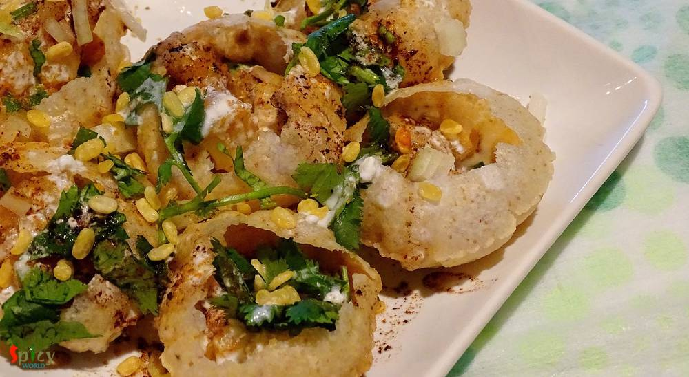
Veg Recipe
Jan 5, 2016
Do I really need to say anything about this ?? It's 'chaat' !! You can get several types of chaat in India from street vendors. They all are very very tasty. One of the famous chaat in Kolkata is 'doi phuchka'. They fill the phuchkas with spicy potato filling, thick curd mixture, tamarind chutney and sprinkle some chopped onion and coriander leaves .. ssluurrpp ... !!! Now I am staying in USA, so ...
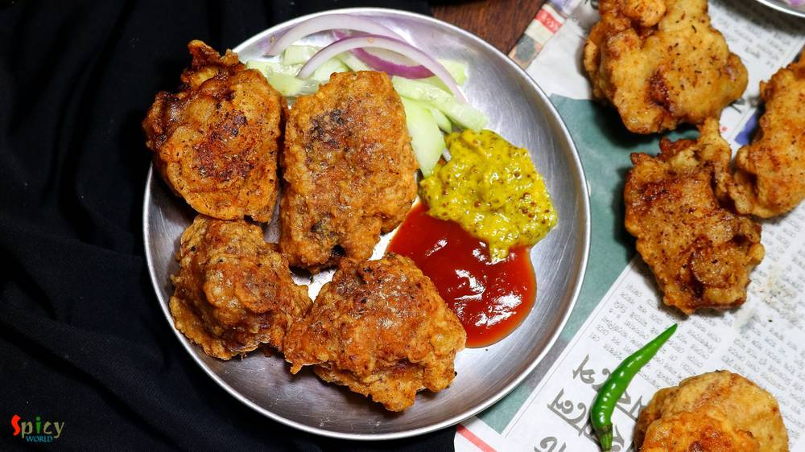
Nonveg Recipe
Jan 4, 2016
How about a crazy snack in evening?? Ohh yeaah its Pakora time!! This is the perfect 'pokora' recipe ever. In Kolkata we get this kind of chicken pokora from fast food centers. But according to me the best homemade pokora maker is my mom. My friends, our relatives, everyone is a fan of my mom's pokora. They always become spicy, soft, juicy and yummy. If you follow this recipe you can get the same ...

Veg Recipe
Dec 30, 2015
I heard a lot about this dish in past few months and started to research. As I never tasted it before, so I went to an Indian restaurant in Austin named 'Bombay Bistro' and tasted their 'daal bukhara'. Oh my god, it was lip smacking good and then I realized why this dal is so famous. Texture of the dal really impressed me a lot. The authentic recipe is very simple and easy but main trick here is t ...

Veg Recipe
Dec 29, 2015
Everybody loves paneer, right? Specially when there is a spicy paneer stuffing inside a paratha, I am always up for it. This was my first try on 'paneer paratha' and I just nailed it. Believe me it is much easier than 'aloo paratha'. I made those in breakfast with 'chana masala' and the combo was really gorgeous. Parathas came out perfectly crispy and soft. The taste was unforgettable, we enjoyed ...

Veg Recipe
Dec 21, 2015
The day before yesterday I was craving for some dessert at afternoon. As I didn't have any in my kitchen, had to make it by own. The quickest recipe I found is this one 'Sooji Halwa'. It really takes 20-25 minutes to prepare and tastes awesome. You can make 'halwa' in many colors like white, golden, yellow or orange. But I like my halwa little yellow in color. This was the first time I made halwa ...

Nonveg Recipe
Dec 18, 2015
First let me thank Disha D'souza for this unique idea. 2-3 weeks ago in a facebook group I saw her unique post and really got inspired. Though I changed the name and recipe little bit (hope she won't mind), but the idea credit must go to Disha. Lots of love and thanks from 'spicy world' to her. Now lets talk about the dish. You can see this is a double colored chicken curry. I also maintain two di ...

Nonveg Recipe
Dec 13, 2015
In India, 'mutton dopyaza' is a very frequently ordered dish in restaurants. 'Dopyaza' means double amount of onion. From this curry you will get juicy meat, thick gravy and some nice crunch of onions. You can make this curry with chicken and fish also. If you make this dish in any potluck or party, it will become the main attraction. I tried to keep the recipe very simple and easy. Just give it a ...

Veg Recipe
Dec 10, 2015
Last weekend I wanted to make something new veg maincourse, thats why I chose this 'paneer kofta curry' and it was just delicious. You can make kofta curry with raw banana, jack fruit, chicken, fish, mutton etc. They all tastes really good. I made it with paneer kofta, you can see how good looking they are and by clicking the picture below you can see how it's prepared. I served this curry with pl ...

Veg Recipe
Dec 9, 2015
'Kofta' is a very flexible food item, you can serve them as starter or you can soak them in gravy and serve as maincourse also. This was my very first attempt on 'kofta' and from the beginning I was a bit nervous because I often heard that while frying them, kofta has a chance to break. But I carefully maintained the proportion of ingredients and taaddaaa ...!! All of my 'kofta's came out perfectl ...

Veg Recipe
Dec 7, 2015
'Makhni' is a name of rich, smooth, creamy gravy which is very popular in India. You can make 'chicken makhni', 'paneer makhni', 'kofta curry' and many more dishes with this gravy. I personally love the methi flavour and creaminess about this gravy. We had it in dinner last night with soft butter naans. The combination was heavenly. You just have to try this.
")
Veg Recipe
Dec 5, 2015
In vegetarian world 'paneer' plays a very important role. But in nonvegrtarian world it also offers various special dishes. Homemade paneer has its own frshness and taste. There is no comparison between homemade and store bought. I always use homemade fresh 'paneer' in my cooking. You can make several dishes with this. So, try this in your kitchen and I can give you guarantee that you will never b ...

Veg Recipe
Dec 4, 2015
Last tuesday 'he' gave me a call from office at 5:00 pm and requested me to make some 'chatpata' snacks which will go very well with tea. So, I had exactly 1 hour in my hand to make something. Don't know why, but suddenly a thought of spending evening time in India, came in my mind. My grandpa used to bring different kinds of snacks like 'samosa', 'nimki', 'vegetable chop', 'kachori', 'beguni' etc ...

Nonveg Recipe
Dec 2, 2015
This snack is a very popular street food in West Bengal. You will enjoy these croquettes more from small street food shop / gumti / jhupri , though I don't have any experience of eating 'chingrir chop' from any restaurant. In US, there is no 'gumti', thats why I had to make those in my kitchen and brought the exact taste from Bengal. They were really delicious and we enjoyed them with chilli sauce ...

Veg Recipe
Dec 1, 2015
I know making 'naroo' is a really time consuming task. Specially when you have puja in your house, there are several works to do. Here is the shortcut version of 'naroo', which you can make in 10 minutes. The recipe is so simple and needs very few ingredients. Naroo, made with fresh coconut, tastes heavenly. But believe me you will love these too. Try this in your kitchen and let me know how it tu ...
")
Veg Recipe
Nov 25, 2015
I have a friend in New Jersy, Monica, who makes the best chana masala ever. I learned this recipe from her. Since we moved from Jersy I missed her and her cooking very much. This is a punjabi dish, goes very well with bhatura, puri or roti. The recipe is very simple and it tastes delicious.

Veg Recipe
Nov 24, 2015
'Diwali' is the celebration of light and sound. Its been two years I am away from home (Kolkata). My papa used to buy me lots of crackers a day before diwali, we toast them in sunlight and in the evening of diwali my (maternal) uncle bought me some more crackers for his 'vagni'. Then around 8 pm me and my papa used to decorate our roof with candles and after that we started doing fireworks with ou ...

Nonveg Recipe
Nov 21, 2015
When an inch of oil or ghee floats upon gravy, yes its 'mughlai nawabi dish'. 'Nawab' means king. This category of curries have nice colored, rich, thick, creamy gravy. 'Chicken Korma' is my favourite one. You can easily eat this curry once in a month along with 'biriyani', 'pulaao', 'butter naan' or 'rumali roti'. Do not put this kind of food in your regular diet because you have to make or eat k ...
")
Nonveg Recipe
Nov 20, 2015
You know winter is coming and all you need is a bowl of warm soup. You can put many vegetables and protiens in it. Soup is very healthy meal for kids. It is also very helpful for sick people. Specially in winter, you can get many varieties of vegetables from grocery store. Then why not make some soup? This one is a very simple and easy recipe. I mentioned 'desi' style because i used some whole spi ...
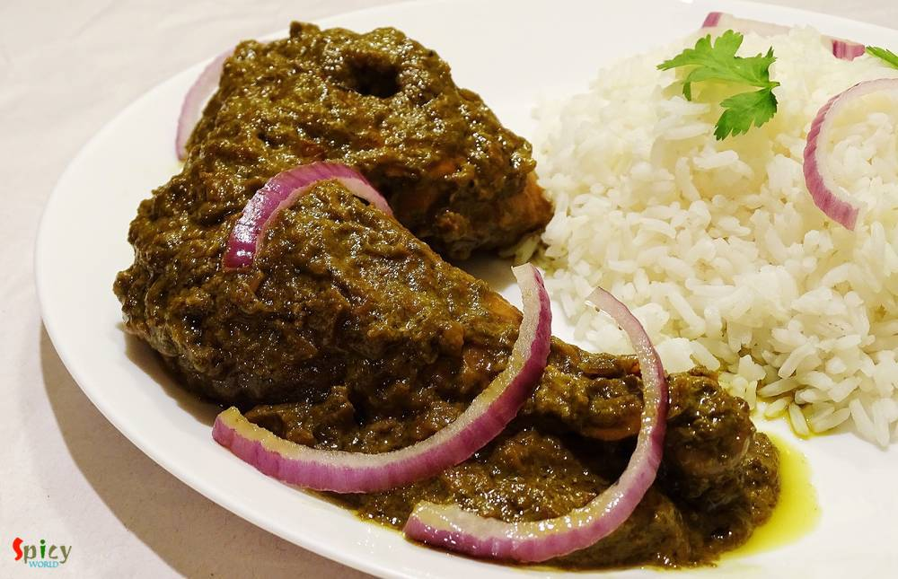
Nonveg Recipe
Nov 19, 2015
When I was in college, I loved to do some cooking with my mom. 'Dhaniya Chicken' was one of my teenage speciality dish. Dhaniya / dhonepata means coriander leaves. I only prefer to use garlic and don't like to use whole spices for this dish. According to me, the strong aroma of whole spices dominate the flavour of fresh coriander leaves. After a long time, last night I made 'dhonepata chicken' alo ...

Nonveg Recipe
Nov 16, 2015
This dish dont need any explanation. Its very popular in India and nowadays all over the world. There was a rumor that without "tandoor/oven" you cannot make tandoori. But believe me today I am sharing "oven method and gas method" of making tandoori chicken. 'Tandoor' means oven made with clay and the heat comes from charcoal. In restaurants the actual tandoor flavour comes when juices of chicken ...
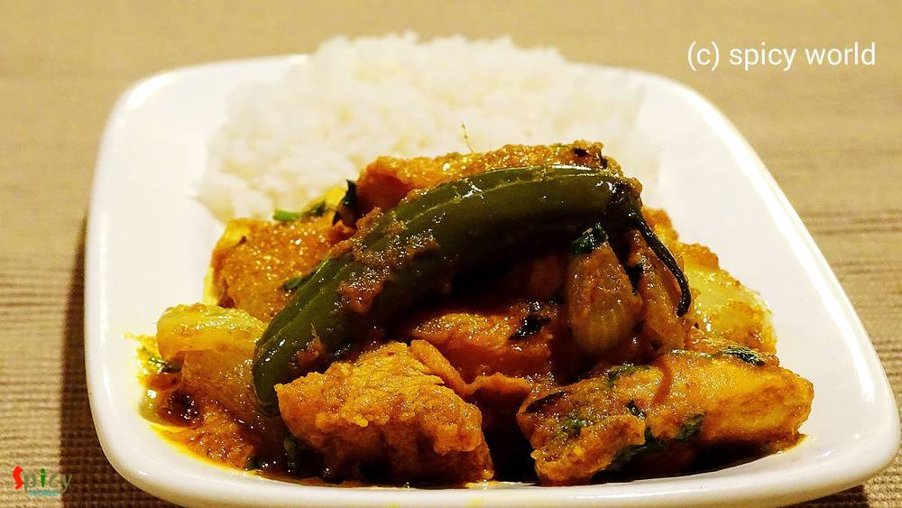
Nonveg Recipe
Nov 13, 2015
I always try new recipes on chicken because it is my family's favourite. Last Friday 'he' wanted to eat any dry preparation at dinner and told me 1 and half hour ago from dinner time. As I had not much time in hand, so, I thought how about marinate everything with chicken pieces and cook it. It took very less time and the taste turned out phenomenal. Believe me the end result was beyond my imagina ...

Veg Recipe
Nov 11, 2015
This is a no onion and no garlic recipe. Usually in many 'puja's we make this kind of dishes. 'Potato curry' goes very well with 'luchi', 'paratha', 'kochuri' etc. But last tuesday I tried a new combo with 'bhatura'. Magically we both loved and enjoyed it very much. I learned this potato curry from my mom. She also follow the same recipe for 'niramish aloo dom' and it tastes always good. Try this ...
")
Veg Recipe
Nov 8, 2015
'Chola-Bhatura' is a very popular combo in India and also in many other countries. The origin of this dish is from Punjab. But you can get this combo as street food in Delhi and many other parts of India. I ate and learnt homemade 'chola-bhatura' from my friend Monica, when I lived in New Jersy. Her 'bhatura's always came out very flakey and puffed up. There is nothing but 'super tasty' I can say ...
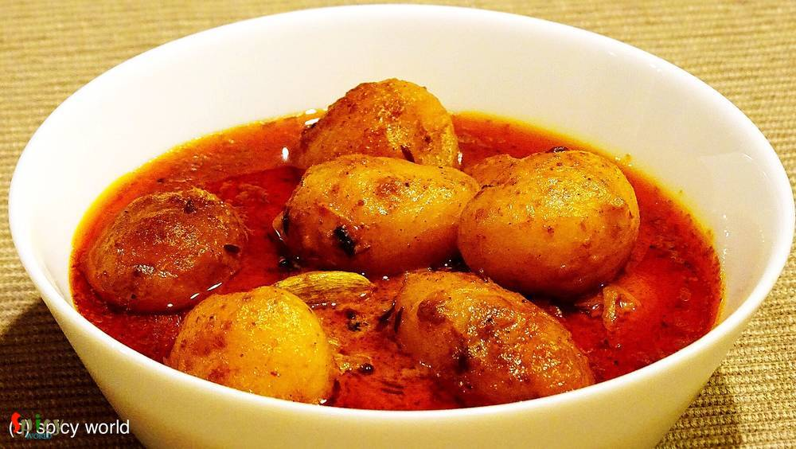
Veg Recipe
Nov 7, 2015
From my childhood, almost in every bengali wedding I have seen the famous combo of 'koraishutir kochuri' and 'kashmiri aloor dom' in the menu card. There is no question about that combo, it tastes heavenly. This dish is no onion and no garlic recipe but the attraction is its nice red color. You will need different types of spice powder for this recipe. I don't know much about kashmiri cuisin, this ...

Nonveg Recipe
Nov 2, 2015
Who doesn't love sandwich ? When there is chicken, I am always up for it ?. I make this kind of sandwich in my home oftenly. The taste is kind of Indian spicy but believe me you will love it. One can make many kinds of sandwiches, and this one is my kind. If you have everything in your hand then the process is very simple and easy. You will need 'green chutney' for the sandwich. Make this in your ...

Veg Recipe
Nov 1, 2015
Almost in every Bengali wedding they serve 'radhaballavi' along with 'aloor dom' as breakfast. 'Radhaballavi' is nothing but deep fried puffed bread stuffed with spicy lentil. It tastes even better with spicy curry and 'rosogolla'. There are many varieties of fried puffed bread like 'daalpuri', 'luchi', 'kochuri' etc and this one is also very tasty. Last night I made it along with potato curry and ...

Nonveg Recipe
Oct 28, 2015
Last weekend I made a jar of coriander-mint chutney and kept in for fridge for future purposes. Yesterday 'he' wanted some snacks in the evening and also wanted something new. Usually we serve kababs along with green chutney but I used that green chutney for the marination of the chicken. Believe me it was worth trying and that's the reason I named it 'chutney kabab'.The texture and taste came out ...

Veg Recipe
Oct 25, 2015
This recipe happened by mistake last week. I know what you are thinking!! But I will never regret about this mistake because it turned out delicious. Let me tell you the story first. Last week I took an attempt to make 'sondesh', but the taste came out very less sweeter. I got panicked and immediately called my only life saver 'mom'. She adviced me to follow the process of 'rosmalai'. In rosmalai ...

Nonveg Recipe
Oct 23, 2015
It's always very hard for me to make as usual meal like 'daal, sabji' on weekend. I am sure you will get delicious aroma of spicy dishes from my kitchen almost every weekend. Last weekend 'charcoal' flavour was coming out from a new chicken preparation. Yes, its 'dahi dhuan chicken'. If you like to eat dhaba foods then you will become a fan of this dish. It has a thick rich gravy, nice crunch of o ...

Nonveg Recipe
Oct 7, 2015
In India we all love "dhaba" foods and also we love eggs. Mostly their dishes are spicy. So, today I am sharing this spicy dish with you. Please try this at your home.

Veg Recipe
Oct 4, 2015
This dish dont need any explanation. Because its 'Biriyani'. This is the most popular dish in India. The vegetarian version of biriyani is also very tasty Just give a try and impress your family.
")
Nonveg Recipe
Sep 22, 2015
I am an inborn chicken lover. During summer it is not always healthy to eat spicy chicken preparations. For this reason my mom used to make this simple jhol / curry for me. It tastes really good with plain hot rice or plain roti. Give it a try.

Veg Recipe
Sep 17, 2015
There are many varities of fried rice you can make like 'chinese style', 'indian style', 'fried rice with sauce' etc. This recipe is about indian style. This is a complete meal with vegetables. You can add chicken, egg, prwan, mushroom in this dish. You will love this dish.

Nonveg Recipe
Sep 17, 2015
This is an awesome non vegetarian snack item. You can also say its a complete snack because it has chicken and paratha. Hope you will like it.

Nonveg Recipe
Sep 13, 2015
I got this recipe from one famous cooking channel in youtube. So, let me thank them first. Now the main attraction of this chicken curry is its aroma and simpleness. When I was making it, the aroma from the spices made my husband and me very much impatient. But anyway we had to wait till dinner and enjoyed with hot roti a lot. Make this dish and I am sure it will become your favourite too.

Nonveg Recipe
Sep 11, 2015
Whenever you are unable to think of any maincourse dish for your party, you can blindly rely on this chicken curry. Everyone will like it. This curry has nice aroma of 'kadai masala', little crunch of onion, capsicum and the juicy chicken pieces. Serve this curry with pulao or biriyani, then your party menu will be memorable.